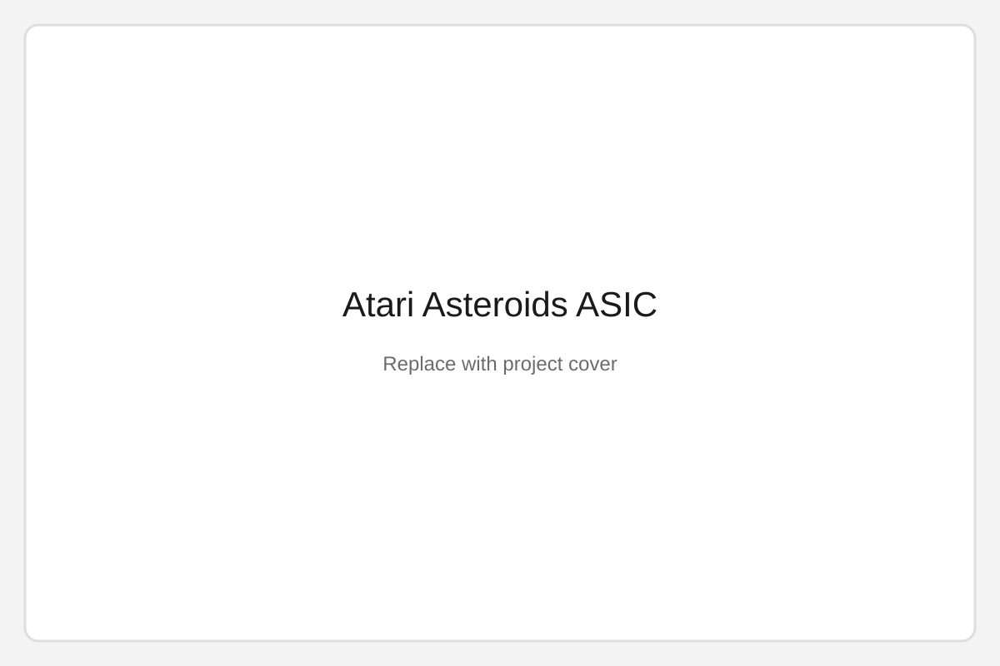

Analog Audio Equalizer and Amplifier
Filters
Three adjustable frequency bands
Amplifiers
LM324 and LM386
Output
>400 mW into 8 Ω



Overview
A three-band analog audio equalizer using RC filter networks for low, mid, and high frequency bands. The measured −3 dB cutoff frequencies were within 10% of their theoretical values.
Amplification and testing
An LM324 summing stage combined the independently adjustable bands, while an LM386 power amplifier drove an 8 Ω speaker at greater than 400 mW. The full circuit was simulated in LTspice and validated using oscilloscope measurements with less than 15 mV ripple.